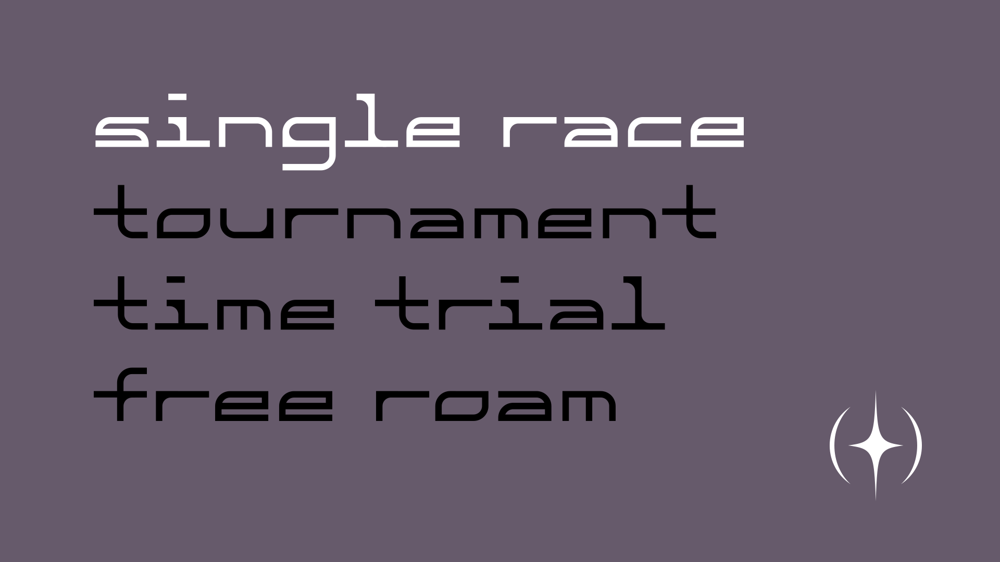
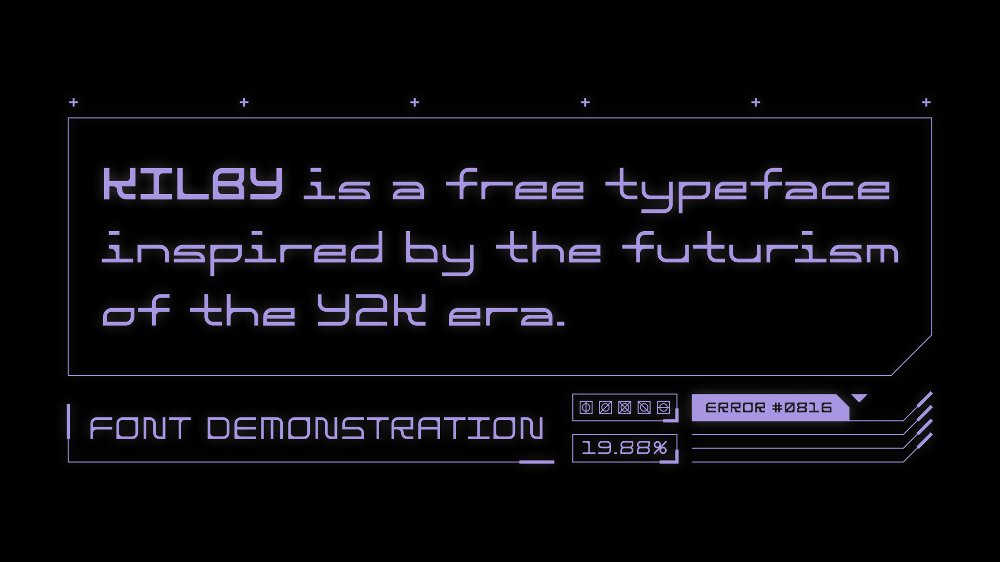
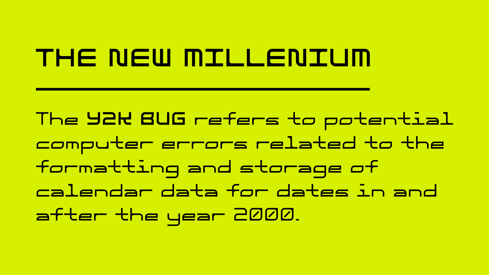

← Return to Homepage — Kilby

Kilby — A Free Font
This typeface was inspired by the technology of the new millennium and the futurism of the Y2K era. It comes in regular and bold, with A-Z, 0-9, punctuation, and most common glyphs and accent marks.



Download
Font Details
Released: 2022
Style: Techno / Sci-Fi
Note: Comes in two weights
Usage Rights
This is a free font.
Commercial use is allowed.
Attribution is not required.